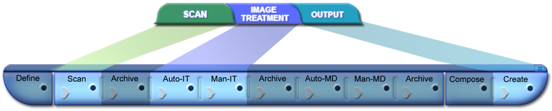
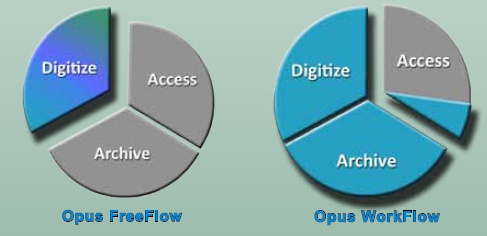

Opus FreeFlow
Opus FreeFlow versus Opus Workflow
Features Comparison
Opus FreeFlow is an application that provides the scanning, image treatment and derivative creation capabilities of the full Opus Digitization Workflow system outside of its structured project management environment. Opus FreeFlow doesn't capture or output metadata or perform automatic archiving. Opus FreeFlow is fully compatible with Opus Digitization Workflow software. While objects are in the middle of the Opus Workflow, they can be opened with Opus FreeFlow and additional scanning performed, images modified and derivatives created.
 | Define Projects Features and Capabilities | FreeFlow | Workflow |
|---|---|---|
| Creates and manages projects | YES | |
| Creates and manages project templates | YES | |
| Creates and manages objects | YES | |
| Prints object tracking sheets | YES | |
| Maintains a project history database | YES |
| Scanning Capabilities | FreeFlow | Workflow |
|---|---|---|
| Automatically reads tracking sheets | YES | |
| Containerizes the images of an object | YES | YES |
| Supports continuous (batch) scanning | YES | YES |
| Supports multiple concurrent projects and objects - suspend and resume scanning of unfinished projects and objects | YES | YES |
| Supports all Scan2Net® scanners | YES | YES |
| Supports many TWAIN scanners | YES | YES |
| Supports insertion, deletion, rescanning and rotation of images | YES | YES |
| Supports insertion, deletion, rescanning and rotation of images | YES | YES |
| Supports undo/redo | YES | YES |